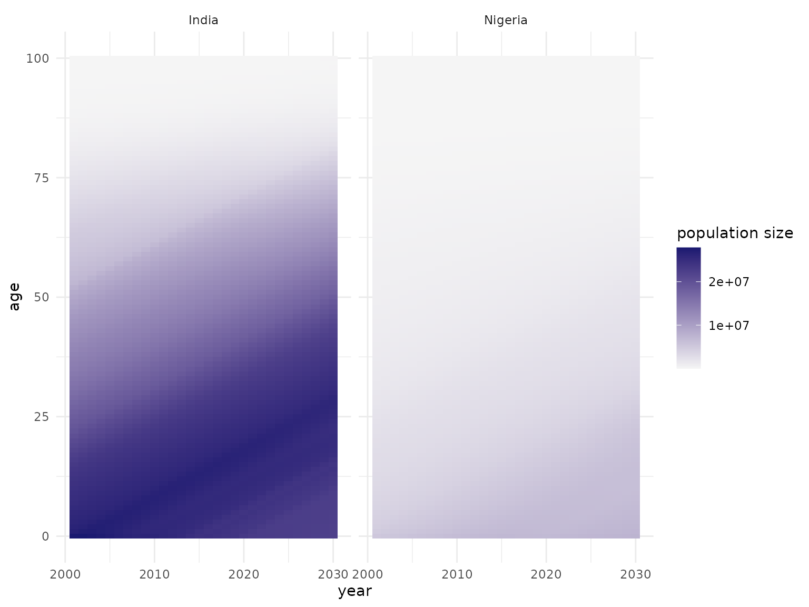
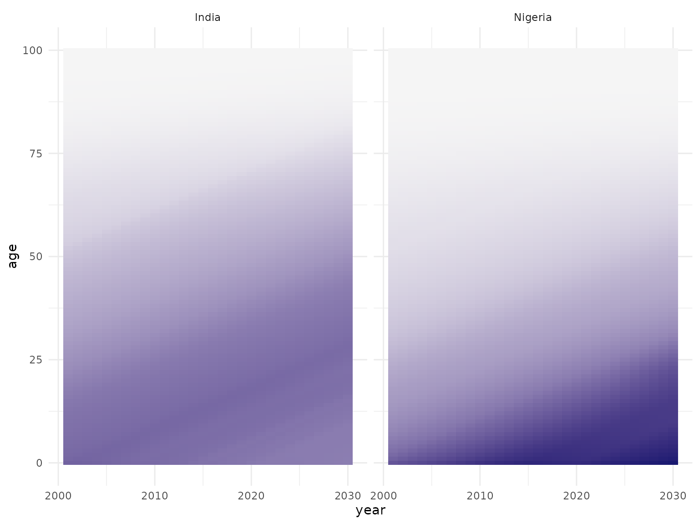

useful_data_sources.Rmd
library(popim)When using the the popim package it can be useful to
initialise populations and vaccination activities with realistic
data.
The age strucutred population size through time is a heavy data requirement, but the UN World Population Prospects has population data in the right format for use with popim.
There is an API that can be accessed programmatically from R, but I haven’t managed to get this to work yet.
However, country-based population size by single-year age group can be downloaded in .csv file format at the Data Portal.
The appropriate input data for popim are the “Population
by one year age groups and sex” for the countries of interest with the
maximal date range 1950 - 2101.
In these data, countries are labelled by name, but also by the ISO3
code. A list of the countries included is included in the package as the
object unwpp_countries:
data(unwpp_countries)
dim(unwpp_countries)
#> [1] 237 4
head(unwpp_countries)
#> Location ISO3_code ISO2_code SDMX_code
#> 1 Afghanistan AFG AF 4
#> 2 Albania ALB AL 8
#> 3 Algeria DZA DZ 12
#> 4 American Samoa ASM AS 16
#> 5 Andorra AND AD 20
#> 6 Angola AGO AO 24Here we focus on Nigeria (NGA) and India (IND) as an example, having downloaded the relevant dataset in .csv format from the UNWPP Data Portal. Here we have restricted the period to 2001 to 2030 for a more moderate file size.
pop <- read.csv("WPP2024_Population1JanuaryBySingleAgeSex_Medium_2001-2030_IND_NGA.csv",
stringsAsFactors = FALSE, na.strings = "<NA>",
encoding = "UTF-8")
my_countries <- c("India", "Nigeria")
library(dplyr)
#>
#> Attaching package: 'dplyr'
#> The following objects are masked from 'package:stats':
#>
#> filter, lag
#> The following objects are masked from 'package:base':
#>
#> intersect, setdiff, setequal, union
drop_unwpp_cols <- function(dat, countries) {
dat |> filter(Location %in% countries) |>
select(Location, Time, AgeStart, Value) |>
rename(region = Location, year = Time, age = AgeStart,
pop_size = Value)
}
pop <- drop_unwpp_cols(pop, my_countries)
pop <- as_popim_pop(pop)The plot of the absolute population size reveals that India’s population size dwarfs that of Nigeria, but obscures the age distribution of Nigeria a little.
plot_pop_size(pop)
The age distributions of both countries can be seen more clearly when plotting relative population sizes:
plot_pop_size(pop, rel = TRUE)